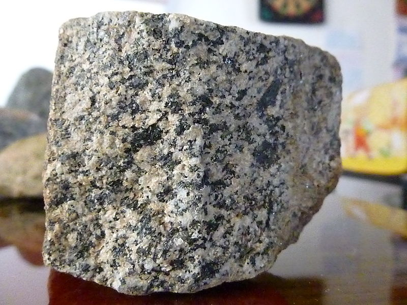
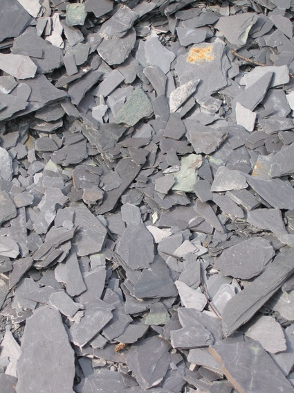
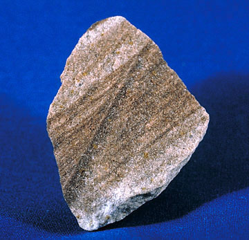

Aqui estan los tipos de piedras mas conocidas
| Tipos | Imagen | Caracteristicas |
|---|---|---|
| Granito |  | Este tipo de piedra se caracteriza por estar compuesta de cuarzo, mica y feldespato. Se conoce como una roca ígnea ya que en tiempos antiguos se encontraba en la profundidad, llegando hasta nuestros días a la corteza terrestre. El granito poseer un color gris en su apariencia, aunque llega a tener manchas rosas o amarillas. Su densidad se encuentra de entre 2.6 a 2.7 kilogramos por decímetro cubico. Presenta una dureza y resistencia excelente por lo cual se emplea como recubrimiento para fachas, así como para el adoquinado de calles y exteriores. |
| Pizarra |  | La pizarra es un tipo de piedra con menos dureza que el granito pero más brillante. Posee una apariencia en tonos oscuros, además de estar constituida por minerales sumamente finos. Este tipo de piedra se puede obtener en láminas o placas de poco grosor, planas e impermeables. |
| Arenisca |  | Este tipo de roca se forma a partir de la arena, la cual se une por medio del cemento, y se forman granos de cuarzo. Además, presenta una resistencia a la compresión y flexión. Las areniscas se emplean principalmente para la decoración en exteriores. |
| Marmol |  |
El mármol es una de las piedras que más se emplean en la industria de la decoración esto se debe a que durante su formación sufre un proceso de re cristalización, el cual es responsable del color y consistencia que tiene. |